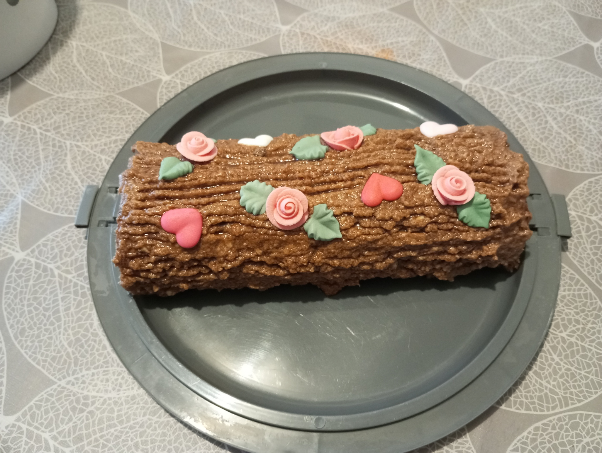

Bûche au chocolat
Recette

Ingrédients
(pour 10 personnes)
(pour 10 personnes)
Pour le biscuit à rouler :
- 167 g de Farine
- 167 g de Sucre en poudre
- 5 Oeufs
- 1,75 Blanc d'œuf
- 0,75 sachet de Levure
- 333 g de Beurre bien mou
- 167 g de Sucre glace
- 3,25 Oeufs
- 1,75 Jaune d'œuf
- 3,25 cuillères à soupe de Cacao
- Préchauffez le four à 200 °C.
- Préparez le biscuit :
- Séparez les blancs des jaunes.
- Fouettez les jaunes au batteur électrique avec le sucre.
- Incorporez la farine et la levure.
- Fouettez les blancs battus en neige ferme et incorporez-les au mélange précédent.
- Versez la pâte sur une plaque allant au four recouverte de papier cuisson. Enfournez pendant 10 minutes.
- Démoulez sur un torchon humide, roulez avec le torchon et laissez refroidir.
- Préparez la crème au beurre :
- Fouettez le beurre au batteur électrique pour obtenir une crème.
- Fouettez ensuite les 2 œufs entiers et le jaune, le sucre glace, le cacao et incorporez ce mélange au beurre.
- Travaillez quelques instants au batteur électrique.
- Étalez les 2/3 de la crème au beurre sur la génoise, puis roulez la bûche.
- Coupez les extrémités, puis recouvrez le gâteau de crème au chocolat.
- Faites la décoration bois à l'aide des dents d'une fourchette.
- Laissez reposer 24 heures au réfrigérateur.